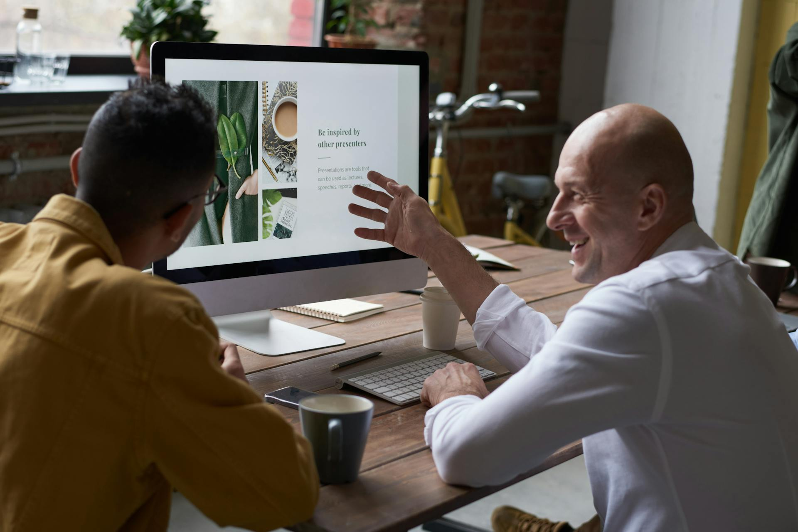
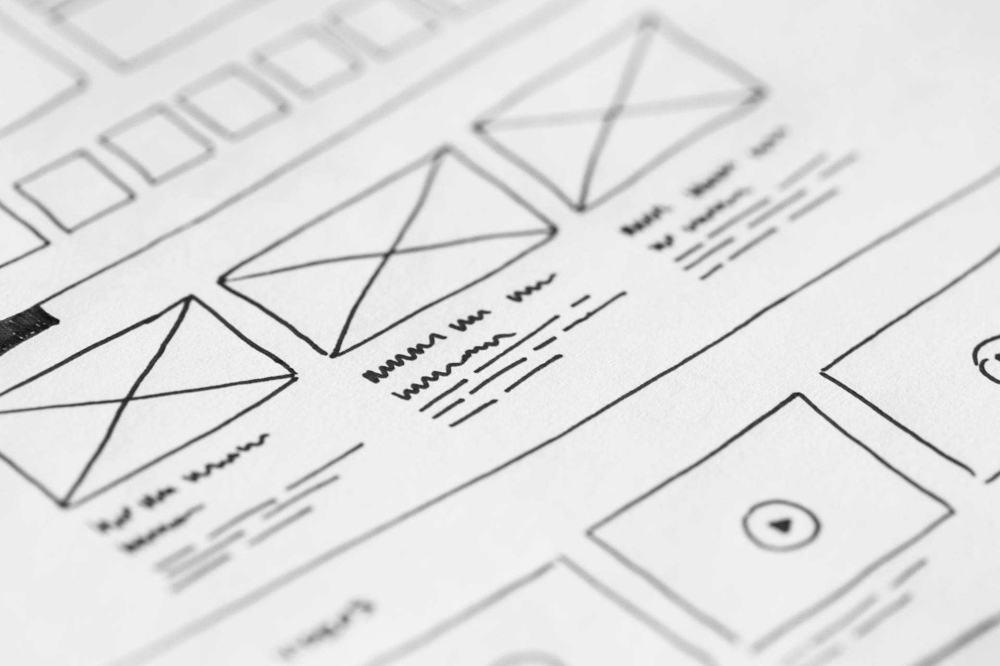

Most creative studios will tell you they care about quality. They will tell you their process is thorough. They will tell you they take the time to understand your business. The language is so standard at this point that it means almost nothing.
Most creative studios will tell you they care about quality. They will tell you their process is thorough. They will tell you they take the time to understand your business. The language is so standard at this point that it means almost nothing.
So instead of adding another version of that, this post is what actually happens when you work with us. What we believe. How we approach projects. The kind of clients we take on and the kind we turn down. Why our work looks the way it does and why we'd rather lose a project than compromise on how we do it.
If you're considering hiring us, this is probably the post to read before the discovery call. And if we're not the right fit, we'd rather you know now than three weeks into a project that isn't working.
What "sharp, intentional" actually means
Our tagline promise is sharp, intentional work. That's language, and language is cheap. Here's what it actually translates to in how we make decisions.
Sharp means the work is deliberate, not decorative. Every color, every typographic choice, every word, every interaction on a website should exist for a reason. If we can't explain why something is there, it shouldn't be. Most design work we see in the wild is soft: slightly vague taglines, middle-of-the-road color palettes, fonts picked because they look nice, compositions that don't prioritize anything. Sharp means we fight that instinct on every project. It means we choose. It means there's a point of view in the work.
Intentional means the design serves the business, not the other way around. Pretty is not enough. Unique is not enough. A brand or a website has to do a specific job: attract the right clients, position the business clearly, make selling easier, hold up over time. If our work is gorgeous but doesn't do those things, we've failed. We'd rather deliver a brand that's 85% as visually striking but does 100% of the commercial work than the opposite.
This is harder than it sounds, because the temptation in creative work is to prioritize what looks impressive in a portfolio. We try not to. The portfolio should be a byproduct of work that actually moved our clients' businesses forward, not the point.
The clients we work with
We are clear about this because being unclear about it costs us and costs the client. We work best with a specific kind of business, and we are not the right studio for everyone.
Entrepreneurs and service businesses at an inflection point. Most of our clients come to us at a moment of transition. They've outgrown a DIY brand. They're launching something new. They're rebranding after a pivot. They're building their first real website because their business has gotten serious enough to need one. We are built for those moments. We are less useful to businesses that are just looking for a logo refresh or a template tweak.
Founders who care about their business looking the way they want it to look. Not vain, but attentive. Founders who have thought about the kind of brand they want to build and want a studio to help them articulate it. The work goes best when the client has strong opinions and is willing to defend them, because that gives us something real to work with.
Businesses where the brand is a meaningful part of the offer. Service providers, coaches, studios, agencies, consultants, boutique product businesses. Anyone whose positioning directly affects what they can charge and who they attract. For these businesses, the brand is an investment that compounds. For other kinds of businesses (commoditized products, volume operations) the brand matters less and a cheaper solution often makes more sense.
Clients who want to be involved but not in charge of the creative direction. The best working relationships are collaborative. You bring the business context, the vision for where you're headed, and the final say on whether the work feels right. We bring the expertise on how to translate that into a brand or website that does its job. If you want to direct every design decision, we're probably not the right studio for you. If you want to be consulted, not managed, we probably are.

The clients we turn down
Just as important as who we work with is who we don't. Here's who we tend to refer elsewhere.
Businesses looking for the cheapest option. We're not the cheapest and we don't want to be. If price is the main decision factor, there are great freelancers and lower-cost studios that will serve you better than we will. We'd rather send you to them than take a project where we can't do the work at our standard.
Businesses that haven't validated their idea yet. Pre-revenue businesses sometimes come to us wanting full brand identity work. We usually push back. Until you have customers, you don't know what your actual market position is. Spending $10,000 on a brand that might not reflect where your business actually lands is backwards. We often suggest they hire a freelancer for something lean that gets them to market, then come back to us when they have traction.
Projects where the scope is unclear and the client doesn't want to do the work of clarifying it. Good creative work requires a real conversation about what the business needs. Some prospects want a quote without that conversation, which almost always produces bad outcomes. If someone isn't willing to invest an hour in a real discovery call, the project rarely goes well, regardless of the budget.
Businesses whose values don't align with ours. We've turned down projects because the business model was extractive, because the target audience was misled about what they were buying, or because the work would contribute to something we didn't want to contribute to. This is rare, but it happens. We're trying to build a studio we're proud of, which means being selective about what we put out into the world.
How our process actually runs
Process language in creative work is usually fluff. Here's what ours actually looks like, step by step.
Discovery (week 1). A real conversation about your business. Not a generic intake form. We want to understand what you're building, who you're building it for, what's working now, what isn't, and what success looks like. This is where we find out whether the project you think you need is actually the project you need. Sometimes they're different.
Strategy (week 2). Before anything visual happens, we clarify positioning. Who you serve, what you stand for, what makes you different, how you talk about yourself. This step is where most branding projects fail when they're skipped. It's also the part that feels the least "creative" to clients, which is why some studios rush through it. We don't.
Creative direction (weeks 3 to 4). We present direction before we present design. Mood, typography systems, colour territory, and visual language. This is where we align on the feel of the brand before we commit to specific executions. It saves weeks of revisions later when you can say yes or no to the direction before we've built pages or finalized logos.
Design and refinement (weeks 4 to 8). Actual creative output. Logo, brand system, website design, whatever the scope includes. Two rounds of revisions built in, with clear feedback checkpoints. We don't take feedback in unlimited loops because that usually produces worse work, not better work. Defined revision stages force real decisions.
Build and launch (weeks 8 to 12, for web projects). Development, testing, content integration, SEO setup, analytics. The part most studios rush. We take our time here because a beautifully designed site that's slow, broken on mobile, or untracked is not actually a finished project.
Handoff and support. You get everything you need to run your brand without us: editable files, guidelines, training on your website back-end, and recommendations for ongoing maintenance. We remain available for support after launch, but our goal is to make you independent, not dependent.

What we charge and why
We don't publish prices on our site because the right pricing depends on scope, and scope depends on the discovery call. What we can say is what we're not.
We are not the lowest-priced studio in Toronto. Projects generally start at ranges where a freelancer or cheaper shop would be below us. This reflects two things: the size of the team working on your project, and the time we spend on strategy and refinement that cheaper options skip.
We are also not the most expensive. There are agencies in Toronto charging $50,000+ for brand work we would do for considerably less. That reflects our operating model. We're a focused studio, not a mid-market agency with layers of management and an office in a tower.
For most of our clients, the investment lands in ranges that are meaningful but not prohibitive for a serious small or mid-sized business. We're happy to talk specifics in a discovery call once we understand what you actually need.
What we won't compromise on
Every studio has a list of things they protect. Here are ours.
We won't skip strategy. Clients occasionally ask to just jump to design because they're in a hurry or want to save budget. We don't do this. Strategy is what makes the design work. Skipping it produces decoration, not positioning.
We won't ship work we're not proud of. This sounds obvious but it's not universal. Sometimes a client pushes back hard on a creative decision and we genuinely believe our version is better for their business. We'll advocate for it, explain the reasoning, and if we can't convince them, we'll deliver what they want and be transparent about our concerns. What we won't do is quietly produce weaker work because pushback is uncomfortable.
We won't pad timelines. Some agencies stretch projects to charge more or make the process feel more valuable. We move as fast as the quality of the work allows. If something takes four weeks, we deliver in four weeks. If it takes eight, we deliver in eight. We don't invent ceremony.
We won't take projects we know we can't do well. If a prospective project falls outside our expertise (enterprise-scale e-commerce, highly regulated industries, technical products we don't understand), we say so and refer them to studios better equipped for it. We'd rather lose the revenue than produce work we can't stand behind.
Why any of this matters to you
If you've read this far, you're either considering hiring us or you're researching how studios like ours think. Either way, the point of this post isn't to convince you we're the only option. It's to give you enough information to know whether we're the right option for your specific situation.
Good creative partnerships come from fit, not persuasion. If what you read here resonates, we're probably someone you'd enjoy working with. If parts of it made you bristle, we're probably not the right studio for you, and that's fine. Better to know now.
We work with a small number of clients each year. The work we put out is the work we want to be doing, with the businesses we want to be building for. That's the practical meaning of "sharp, intentional" in how we run the studio, not just how we make things.
Frequently asked questions
Where is Ismile Creative and Digital Solutions based?
Toronto, Canada. We work with clients across Canada and remotely with clients elsewhere, but most of our in-person work happens in the GTA.
What services does the studio offer?
Brand identity, web design and development, digital marketing, systems and automations, and business consulting for small and mid-sized service businesses. We don't do everything. We focus on the disciplines where we can genuinely deliver at the level we want to deliver.
How long do typical projects take?
Brand identity projects run 4 to 8 weeks. Full website projects run 8 to 14 weeks depending on scope. Combined brand plus web projects typically take 10 to 16 weeks. We don't rush timelines, but we don't invent them either.
What does a typical project cost?
It depends on scope. Small focused projects start in the low five figures. Larger brand and web engagements run higher. Pricing is discussed transparently once we understand the project scope through the discovery call.
Do you work with clients outside Toronto?
Yes. Most of our client communication happens remotely anyway. We've worked with clients across Canada and internationally. The process doesn't change based on location.
What's the first step if I want to work with you?
Book a discovery call. 30 minutes, free, no pressure. We'll talk through your business, what you're trying to build, and whether we're the right studio for the project. If we are, we send a proposal. If we aren't, we'll tell you and often refer you to someone better suited.
Let's talk
If this sounds like the kind of studio partnership you're looking for, the next step is a conversation.
Book a free call and we'll talk through what you're building. No sales pitch, no pressure. Just a real discussion about whether what we do lines up with what you need.
We work with clients who want to build something serious. If that's you, we'd love to hear what you're working on.
Think we might be the right studio for you?
Book a discovery call. 30 minutes, free, no pressure. We'll talk through your business, what you're trying to build, and whether what we do lines up with what you need.
Book a Discovery Call